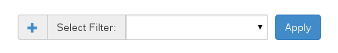

One of the most asked for features in NSTI and any other SNMP user interface is being able to filter the SNMP traps. This page will teach you how to create and manipulate filters in NSTI.
The biggest addition that was made to NSTI 3.0 is that you can now create filters than can be applied to the main traplist. This allows you to check specific columns and values to be able to understand the SNMP data you have received.
Below is the Filter page where you can create, edit and delete filters:
The Filters page is designed to give you full control of your filters and to make creating them much faster. Below is an example of the new filter creation window which is accessed by clicking the Add New Filter button. Enter a New Filter Name, in this example we used “New Filter”. Then you can select different conditions which you want to use to limit your trap results. You can select the item you want to be filtered, the comparison to be made, and the value to filter against:
Note
To edit an existing filter all you have to do is select a single filters’ checkbox and click the pen icon. This will allow you to change anything in the filter other than the Filter Name. To delete a filter, use the same checkbox but select the filter and then click the X icon.
You can also add new filters from the Traplist page where they are applied:
Just click the plus sign to add a new filter and the exact same window that you used above will open. Once you select Add New Filter you will be able to choose it from the dropdown menu on the Traplist page.
From the Traplist page you can select filters you have created from the Select Filter dropdown and click the Apply button. Once a filter has been applied you will see a green tag in the left side above the trap table. This tag means that the filter you selected and applied is currently active on the traplist page. To remove a filter tag simply click the ‘X’ on the tag to delete it.
Note
If you have multiple filters, you can apply them on top of each other to limit results in the Traplist even more. There is no limit to how many filters you can apply at one time. An alternative to applying multiple filters is to create one filter with multiple filter criteria.